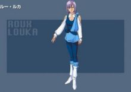

《机动战士高达ZZ》中的男主角。出身于Side1香格里拉卫星的少年，以收破烂营生。
在格利普斯战争期间重伤的亚伽马号泊入香格里拉的时候偷走了Z高达。也因此他与马士文·赛罗指挥的新吉恩部队战斗，并最终成为了亚加玛号上的一员接替精神受到严重刺激的卡缪·维丹战斗。
历次战斗以及与伙伴们的生死离别令他的NT能力迅速觉醒，并领悟到新人类生存的真正意义。在击溃了新吉恩部队后，他脱离军队与露·露卡前往木星开辟新生活。
照顾妹妹：
略历/宇宙世纪0073年，出生于Side-1、通称“香格里拉”的一号殖民地的老街区。
关于双亲并没有详细的情报。他有个小他四岁的妹妹莉娜，似乎是兄代母职，代替时常不在家的双亲照顾妹妹的样子。
在捷多六岁的时候，地球圈全面性的卷入了一年战争之中。他所居住的宇宙殖民地，虽然奇迹似的未被战火所蹂躏，但是其家族还是被之后时代的动荡所卷入。
除了初期型的准备用殖民地之外，香格里拉不仅在Side-1，也是在形成Side后最古老的殖民地之一。
不知是否是身处于密闭空间之故，贫富的差距越见显著，居民们也被区隔，而分别住在被称为山之手的高级住宅区，以及被称为老街的与平民区无异的地区。
而且，因为殖民地公社成员的公然行贿，和依据奇马达市长政策所实施的殖民地税的加重等，使得行政治安更加的恶化。
因此，捷多时常感到自己所居住的殖民地已经腐化了。
宇宙世纪0082年5月，地球联邦政府实施了殖民地再生计划。为了把握住这个特别的机会，捷多的双亲抛下两个孩子到其他的殖民地去讨生活。
宇宙世纪0087年，年满13岁进入国中就读的捷多，连课也不上，在取得了小型MS的执照后，就和青梅竹马的比查他们一起加盟了拾荒者同业公会。
靠简单又有高报酬的拾荒业，维持双亲不再寄钱回来的亚西塔家家计，似乎很合乎他的个性。
不过这个时候似乎无法用捷多的名义借MS，而都是用比查的名字来租赁机械的。
对于不再寄钱回来，毫无责任感的双亲，及被金钱所污染的大人们感到失望，不知从何时起，捷多满脑子只想着靠自己的力量，送妹妹莉娜到山之手的学校就读。
喜欢赚钱：
宇宙世纪0088年3月1日。捷多面临了一个重大的转机。功勋卓著的奥古战舰阿伽玛停靠在香格里拉。
捷多在偶尔被其救起的原泰坦斯上尉亚赞·盖博的怂恿之下，与朋友们一起袭击阿伽玛，目的是为了他时常在安哥拉的杂志上看到的Z高达。
但是，因为亚桑要求他们以阿伽玛的女性成为人质，又使得整备兵受了重伤，在理念不合之下，捷多把到手的Z高达还给了阿伽玛。
同时阿克西斯（后来改名为新吉翁）为了进行宣武工作，也将安多拉号停泊在了香格里拉。
为了助苦于驾驶员人手不足的阿伽马一臂之力，捷多屡屡搭乘Z高达。虽然对Z高达的操作不是很熟悉，但是捷多艰难地击退了安多拉的MS队。最后终于以驾驶员候补生的身份加入奥古。
但是，对于战场的紧张感不足，捷多犯了拾荒者时代的职业病，眼中只有哨戒任务中发现的扎古II，因而犯了个天大的错误。为了不负责任的哥哥，身为妹妹的莉娜赴战场去完成哥哥未尽的任务。
不幸遇上了安多拉舰，在月之族殖民地的一系列事件中阿克西斯的机师——葛雷米·托托带走了已经昏倒的莉娜，并要求捷多用露·露卡交换莉娜，然后驾驶AMX-107 龙飞离开了月之族殖民地。

露·露卡，《机动战士高达zz》登场的女机师。奥古志愿兵、为将ZZ高达的核心战机送到亚加玛而来。机师的服装上有着流星的标志。 在捷多乘坐了ZZ高达后作为Z高达的机师参战。 本人有着明确的意志和刚强的性格、开始在战斗中会与捷多唱反调、后来也慢慢地融入到了朋友当中。而且为古雷米单方面的求爱所困扰、在阿克西斯的决战时将其击破后流下了眼泪。 全部的战事完结之后、与捷多一起踏上了前往木星的旅途。